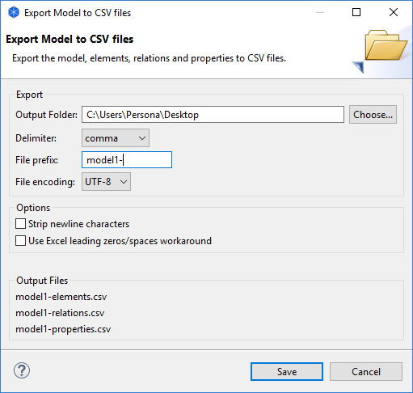
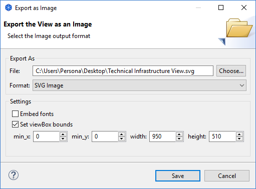

Il est possible d'exporter le modèle Archi ou ses vues sous différents formats de façon à réutiliser le modèle ou des images dans différentes applications. Certains formats d'import sont égalements pris en charge.
Vous pouvez exporter les données d'un modèle au format CSV (valeurs séparées par des virgules). Les données sont exportées dans trois fichiers différents - "elements.csv", "relations.csv" et "properties.csv" .Tous les éléments de données sont identifiées par des identifiants uniques de telle façon qu'une propriété référencera un élément ou une relation dans d'autres fichiers.
Cette option est accessible via l'élément de menu "Exporter le modème en csv..." dans le menu principal "Fichier->Export". Une fois qu'un modèle a été choisi dans l'arborescence des modèles ou dans une vue, cet élément de menu devient accessible.
Exporter le modèle en CSV
Le format du champ CSV pour les éléments est: "ID", "Type", "Nom", "Documentation"
Le format du champ CSV pour les relations est: "ID", "Type", "Nom", "Documentation", "Source", "Cible"
Le format du champ CSV pour les propriétés est: "ID", "Clef", "Valeur"
Dossier de sortie
Choisissez le dossier dans lequel les fichiers résultats seront produits.
Délimiteur
Choisissez le caractère délimiteur pour les champs CSV: virgule, point-virgule ou tabulation.
Préfixe de fichier
Fournissez le préfixe optionnel à ajouter aux noms de fichiers. Par exemple "MonModele-" modifiera les noms de fichiers en "MonModele-elements.csv", "MonModele-relations.csv" et "MonModele-properties.csv".
Encodage des fichiers
Choisissez l'encodage de fichier à utiliser: ANSI ou UTF-8. Certains programmes préfèrent l'un ou l'autre de ces encodages de fichier.
Supprimer les caractères de fin de ligne
Si cette option est activée, elle supprimera tous les caractères retour chariot des textes sur plusieurs lignes tels que ceux des documentations.
Utiliser le contournement des zéros/espaces d'en-tête Excel
Si cette option est choisiée, elle entourera tout texte commençant par un zéro ou un espace avec des guillements afin que les données soient correctement importées dans Excel.
Inversement, vous pouvez importer des données CSV dans un modèle existant. Les fichiers CSV doivent être dans le même format que celui décrit ci-dessus. Les identifiants des éléments et des relations sont facultatifs mais vous devez fournir un identifiant pour un élément s'il est référencé par une relation ou une propriété, tout comme vous devez fournir un identifiant pour une relation si elle est référencée par une propriété. Si vous fournissez un identifiant, celui-ci doit être unique dans le fichier et il doit utiliser des caractères alphanumériques, par exemple: "id1", "8fe456d", "acteur3". Si un identifiant n'est pas fourni, un champ vide "" doit être présent. Dans ce cas, un identifiant sera généré lors de l'import.
A tout le moins, vous devez fournir un fichier CSV appelé "xxx-elements.csv" où la partie du nom de fichier "xxx-" est facultative. Si vous fournissez également un fichier de relations, il doit être dans le format décrit ci-dessus et être appelé "xxx-relations.csv". Si vous fournissez également un fichier de propriétés, il doit être dans le format décrit précédemment et appelé "xxx-properties.csv". De nouveau, la partie du nom de fichier "xxx-" est facultative. Les trois noms de fichiers doivent correspondre: par exemple "monnom-elements.csv", "monnom-relations.csv" et "monnom-properties.csv".
La meilleure façon de comprendre le format requis est d'exporter un modèle existant au format CSV puis d'ouvrir les fichiers résultant à l'aide d'un éditeur de texte ou d'une application de tableur.
Quand vous importez un ou des fichiers CSV dans Archi, assurez-vous que vous avez sélectionner le fichier "xxx-elements.csv" dans la boîte de dialogue. S'il existe un fichier correspondant "xxx-relations.csv" et/ou un fichier correspondant "xxx-properties.csv", ce(s) fichier(s) sera/seront automatiquement importés en même temps.
Il est également possible de fusionner/mettre à jour des données CSV importées dans un modèle existant. Si un élément du modèle existe déjà, conformément à son identifiant, et que la ligne CSV contient des données différentes de celle contenues dans le modèle, ce dernier sera mis à jour. Par exemple, un acteur métier ayant un identifiant "9240f5bf", est nommé "BA1" et ne possède aucune documentation pourra être mis à jour par une ligne telle que celle qui suit:
"ID","Type","Name","Documentation"
"9240f5bf","BusinessActor","Nouveau nom","Documention complémentaire"
Note: il est actuellement impossible d'importer et d'exporter des informations de diagramme de vie au format CSV.
Une vue (diagramme) peut être exportée en tant qu'image sur le disque. Ceci est disponible depuis la commande de menu "Exporter la vue en tant qu'image..." dans le menu principal "Fichier->Export" ou en faisant un clic droit sur une vue et en choisissant l'élément de menu dans le menu contextuel. Cette commande de menu n'est accessible que si une vue est ouverte et est sélectionnée.
Les formats disponibles sont BPM, JPG, PNG, PDF et SVG. Les trois premiers formats peuvent être exportés semon une échemme allant de 25% à 500%. Le format SVG possède davantage d'options dont l'inclusion de police de caractères et la définition des limites de la oîte de la vue pour différentes échelles.
Exporter une vue en tant qu'image
Note - ceci n'est pas implémenté dans la version Linux 64 bits d'Archi à cause d'un bug dans Eclipse.
Une vue (diagramme) peut être exportée (ou copiée) en tant qu'image dans le presse-papier du système. Ceci est accessible vie la commande de menu "Exporter la vue en tant qu'image dans le presse-papier" du menu principal "Fichier->Export" ou en faisant un clic droit sur une vue puis en choisissant l'élément de menu dans le menu contextuel. Cette commande de menu n'est disponible que si une vue est ouverte et sélectionnée. Un raccourci clavier très utile est Ctrl-Shift-C (La touche Command sur Mac). Une fois que la vue est exportée dans le presse-papier, elle peut être copiée dans d'autres applications telles qu'un traitement de texte ou des outils de dessin.